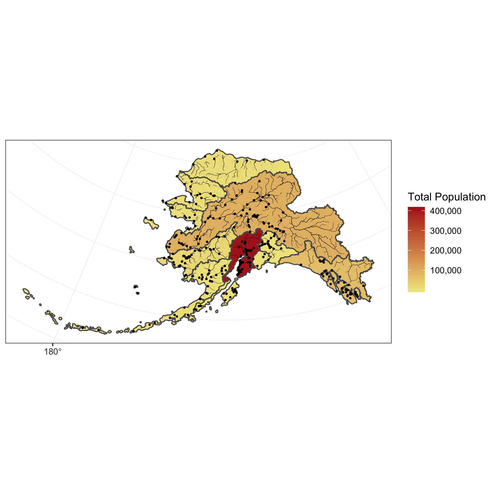
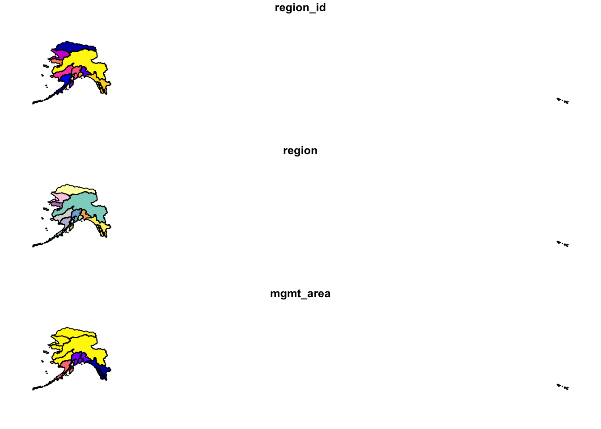
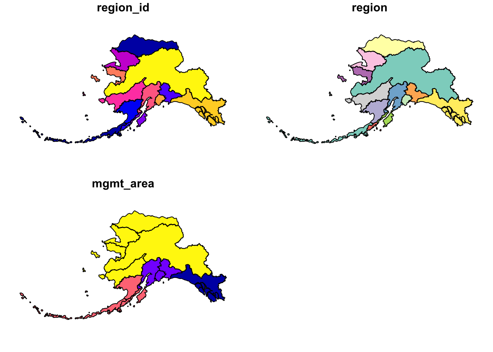
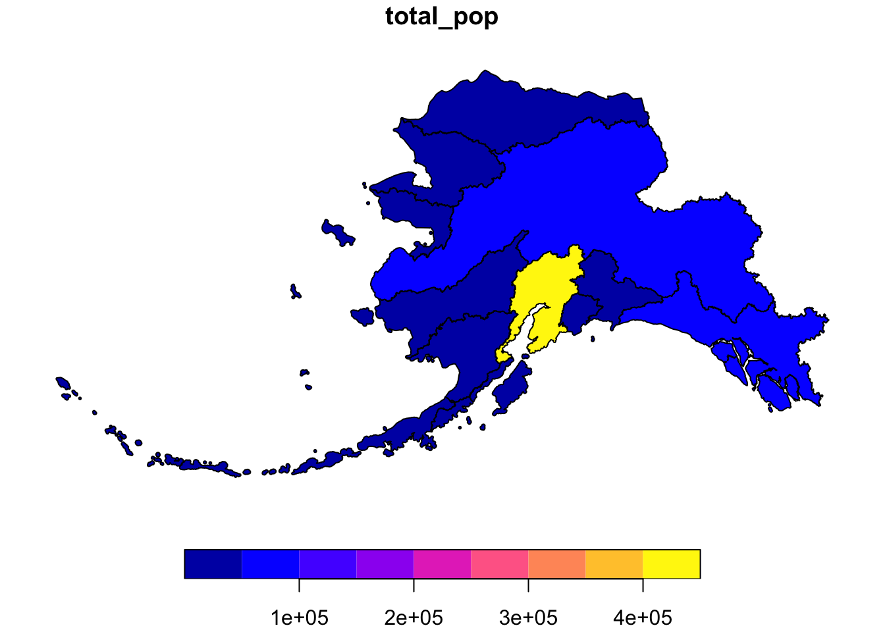
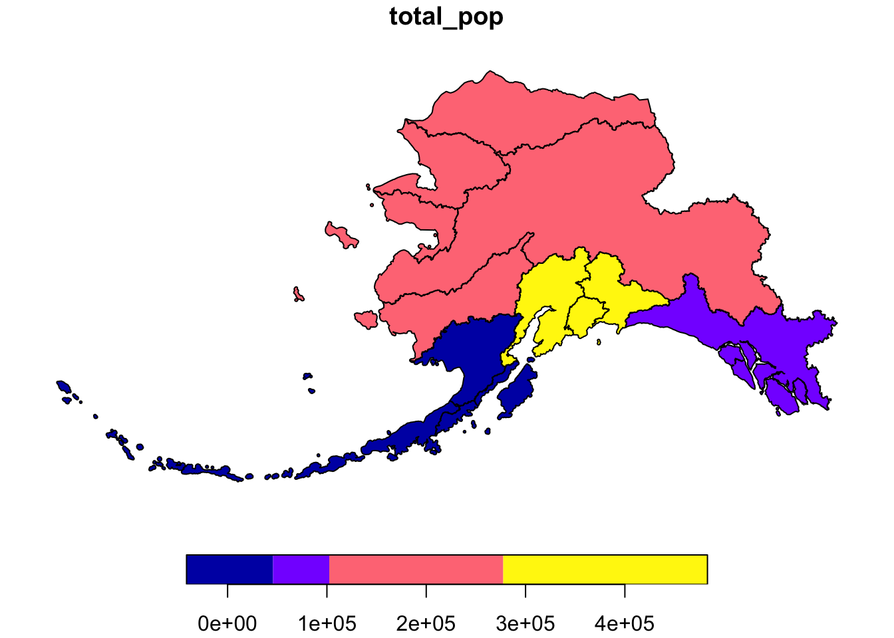
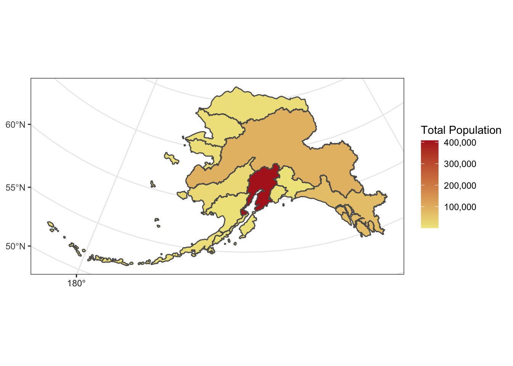
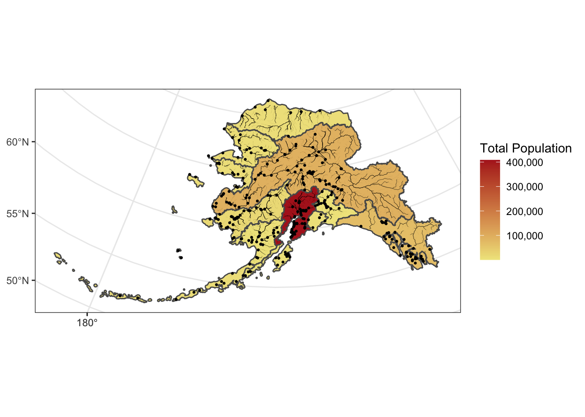
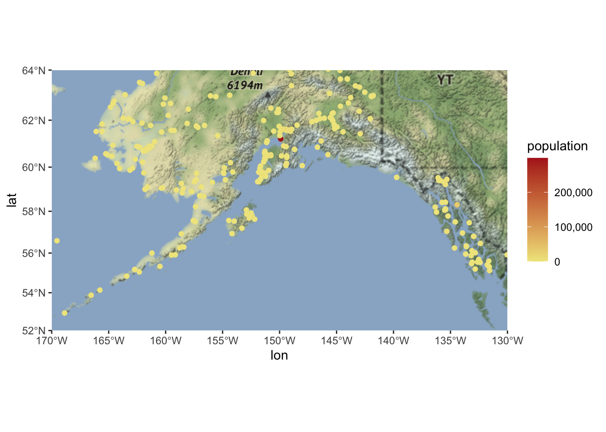

13 Session 13: Geospatial Analysis in R
13.1 Spatial vector analysis using sf
13.1.1 Learning Objectives
In this lesson, you will learn:
- How to use the
sfpackage to analyze geospatial data - Static mapping with ggplot
- interactive mapping with
leaflet
13.1.2 Introduction
From the sf vignette:
Simple features or simple feature access refers to a formal standard (ISO 19125-1:2004) that describes how objects in the real world can be represented in computers, with emphasis on the spatial geometry of these objects. It also describes how such objects can be stored in and retrieved from databases, and which geometrical operations should be defined for them.
The sf package is an R implementation of Simple Features. This package incorporates:
- a new spatial data class system in R
- functions for reading and writing data
- tools for spatial operations on vectors
Most of the functions in this package starts with prefix st_ which stands for spatial and temporal.
In this tutorial, our goal is to use a shapefile of Alaska regions and data on population in Alaska by community to create a map that looks like this:

The data we will be using to create the map are:
- Alaska regional boundaries
- Community locations and population
- Alaksa rivers
13.1.3 Working with geospatial data
All of the data used in this tutorial are simplified versions of real datasets available on the KNB. I’ve simplified the original high-resolution geospatial datasets to ease the processing burden on your computers while learning how to do the analysis. These simplified versions of the datasets may contain topological errors. The original version of the datasets are indicated throughout the chapter.
Setup
For convience, I’ve hosted a zipped copy of all of the files on our test site.
Follow these steps to get ready for the next exercise:
- Navigate to this dataset and download the zip folder.
- Create a new folder in your training_username project called “shapefiles”
- Click the “upload” button on RStudio server, and upload the file to the shapefiles directory
- Open your .gititnore file and add that directory to the list of things to ignore.
- Save and commit the changes to your .gitignore.
The first file we will use is a shapefile of regional boundaries in alaska derived from: Jared Kibele and Jeanette Clark. 2018. State of Alaska’s Salmon and People Regional Boundaries. Knowledge Network for Biocomplexity. doi:10.5063/F1125QWP.
Now we can load the libraries we need:
Read in the data and look at a plot of it.
## Read in shapefile using sf
ak_regions <- read_sf("shapefiles/ak_regions_simp.shp")
plot(ak_regions) 
We can also examine it’s class.
## [1] "sf" "tbl_df" "tbl" "data.frame"sf objects usually have two types - sf and data.frame. Two main differences comparing to a regular data.frame object are spatial metadata (geometry type, dimension, bbox, epsg (SRID), proj4string) and additional column - typically named geometry.
Since our shapefile object has the data.frame class, viewing the contents of the object using the head function shows similar results to data we read in using read.csv.
## Simple feature collection with 6 features and 3 fields
## geometry type: MULTIPOLYGON
## dimension: XY
## bbox: xmin: -179.2296 ymin: 51.15702 xmax: 179.8567 ymax: 71.43957
## CRS: 4326
## # A tibble: 6 x 4
## region_id region mgmt_area geometry
## <int> <chr> <dbl> <MULTIPOLYGON [°]>
## 1 1 Aleutian Is… 3 (((-171.1345 52.44974, -171.1686 52.41744, -171.1939 52.40…
## 2 2 Arctic 4 (((-139.9552 68.70597, -139.9893 68.70516, -140.0108 68.70…
## 3 3 Bristol Bay 3 (((-159.8745 58.62778, -159.8654 58.61376, -159.8623 58.60…
## 4 4 Chignik 3 (((-155.8282 55.84638, -155.8049 55.86557, -155.7414 55.88…
## 5 5 Copper River 2 (((-143.8874 59.93931, -143.9165 59.94034, -143.9439 59.94…
## 6 6 Kodiak 3 (((-151.9997 58.83077, -152.0358 58.82714, -152.0747 58.83…Coordinate Reference System
Every sf object needs a coordinate reference system (or crs) defined in order to work with it correctly. A coordinate reference system contains both a datum and a projection. The datum is how you georeference your points (in 3 dimensions!) onto a spheroid. The projection is how these points are mathematically transformed to represent the georeferenced point on a flat piece of paper. All coordinate reference systems require a datum. However, some coordinate reference systems are “unprojected” (also called geographic coordinate systems). Coordinates in latitude/longitude use a geographic (unprojected) coordinate system. One of the most commonly used geographic coordinate systems is WGS 1984.
ESRI has a blog post that explains these concepts in more detail with very helpful diagrams and examples.
You can view what crs is set by using the function st_crs
## Coordinate Reference System:
## User input: 4326
## wkt:
## GEOGCS["WGS 84",
## DATUM["WGS_1984",
## SPHEROID["WGS 84",6378137,298.257223563,
## AUTHORITY["EPSG","7030"]],
## AUTHORITY["EPSG","6326"]],
## PRIMEM["Greenwich",0,
## AUTHORITY["EPSG","8901"]],
## UNIT["degree",0.0174532925199433,
## AUTHORITY["EPSG","9122"]],
## AUTHORITY["EPSG","4326"]]This is pretty confusing looking. Without getting into the details, that long string says that this data has a greographic coordinate system (WGS84) with no projection. A convenient way to reference crs quickly is by using the EPSG code, a number that represents a standard projection and datum. You can check out a list of (lots!) of EPSG codes here.
We will use several EPSG codes in this lesson. Here they are, along with their more readable names:
- 3338: Alaska Albers
- 4326: WGS84 (World Geodetic System 1984), used in GPS
- 3857: Pseudo-Mercator, used in Google Maps, OpenStreetMap, Bing, ArcGIS, ESRI
You will often need to transform your geospatial data from one coordinate system to another. The st_transform function does this quickly for us. You may have noticed the maps above looked wonky because of the dateline. We might want to set a different projection for this data so it plots nicer. A good one for Alaska is called the Alaska Albers projection, with an EPSG code of 3338.
## Coordinate Reference System:
## User input: EPSG:3338
## wkt:
## PROJCS["NAD83 / Alaska Albers",
## GEOGCS["NAD83",
## DATUM["North_American_Datum_1983",
## SPHEROID["GRS 1980",6378137,298.257222101,
## AUTHORITY["EPSG","7019"]],
## TOWGS84[0,0,0,0,0,0,0],
## AUTHORITY["EPSG","6269"]],
## PRIMEM["Greenwich",0,
## AUTHORITY["EPSG","8901"]],
## UNIT["degree",0.0174532925199433,
## AUTHORITY["EPSG","9122"]],
## AUTHORITY["EPSG","4269"]],
## PROJECTION["Albers_Conic_Equal_Area"],
## PARAMETER["standard_parallel_1",55],
## PARAMETER["standard_parallel_2",65],
## PARAMETER["latitude_of_center",50],
## PARAMETER["longitude_of_center",-154],
## PARAMETER["false_easting",0],
## PARAMETER["false_northing",0],
## UNIT["metre",1,
## AUTHORITY["EPSG","9001"]],
## AXIS["X",EAST],
## AXIS["Y",NORTH],
## AUTHORITY["EPSG","3338"]]
Much better!
13.1.4 sf & the Tidyverse
sf objects can be used as a regular data.frame object in many operations. We already saw the results of plot and head.
Challenge
Try running some other functions you might use to explore a regular data.frame on your sf flavored data.frame.
Since sf objects are data.frames, they play nicely with packages in the tidyverse. Here are a couple of simple examples:
select()
## Simple feature collection with 13 features and 1 field
## geometry type: MULTIPOLYGON
## dimension: XY
## bbox: xmin: -2175328 ymin: 405653.9 xmax: 1579226 ymax: 2383770
## CRS: EPSG:3338
## # A tibble: 13 x 2
## region geometry
## <chr> <MULTIPOLYGON [m]>
## 1 Aleutian Islands (((-1156666 420855.1, -1159837 417990.3, -1161898 416944.4, -1164213 416…
## 2 Arctic (((571289.9 2143072, 569941.5 2142691, 569158.2 2142146, 569091.2 214167…
## 3 Bristol Bay (((-339688.6 973904.9, -339302 972297.3, -339229.2 971037.4, -339447.2 9…
## 4 Chignik (((-114381.9 649966.8, -112866.8 652065.8, -108836.8 654303.1, -108087.1…
## 5 Copper River (((561012 1148301, 559393.7 1148169, 557797.7 1148492, 555907.2 1146706,…
## 6 Kodiak (((115112.5 983293, 113051.3 982825.9, 110801.3 983211.6, 108222.1 98494…
## 7 Kotzebue (((-678815.3 1819519, -677555.2 1820698, -675557.8 1821561, -673917 1821…
## 8 Kuskokwim (((-1030125 1281198, -1029858 1282333, -1028980 1284032, -1027261 128572…
## 9 Cook Inlet (((35214.98 1002457, 36660.3 1002038, 36953.11 1001186, 36741.46 1000245…
## 10 Norton Sound (((-848357 1636692, -846510 1635203, -840513.7 1632225, -835815.4 162865…
## 11 Prince William S… (((426007.1 1087250, 426562.5 1088591, 427711.6 1089991, 429938.5 109118…
## 12 Southeast (((1287777 744574.1, 1290183 745970.8, 1292940 746262.7, 1296762 744831.…
## 13 Yukon (((-375318 1473998, -373723.9 1473487, -373064.8 1473930, -372359.7 1473…Note the sticky geometry column! The geometry column will stay with your sf object even if it is not called explicitly.
filter()
## Simple feature collection with 1 feature and 3 fields
## geometry type: MULTIPOLYGON
## dimension: XY
## bbox: xmin: 559475.7 ymin: 722450 xmax: 1579226 ymax: 1410576
## CRS: EPSG:3338
## # A tibble: 1 x 4
## region_id region mgmt_area geometry
## * <int> <chr> <dbl> <MULTIPOLYGON [m]>
## 1 12 Southea… 1 (((1287777 744574.1, 1290183 745970.8, 1292940 746262.7, 12967…Joins
You can also use the sf package to create spatial joins, useful for when you want to utilize two datasets together. As an example, let’s ask a question: how many people live in each of these Alaska regions?
We have some population data, but it gives the number of people by city, not by region. To determine the number of people per region we will need to:
- read in the city data from a csv and turn it into an
sfobject - use a spatial join (
st_join) to assign each city to a region - use
group_byandsummarizeto calculate the total population by region
First, read in the population data as a regular data.frame. This data is derived from: Jeanette Clark, Sharis Ochs, Derek Strong, and National Historic Geographic Information System. 2018. Languages used in Alaskan households, 1990-2015. Knowledge Network for Biocomplexity. doi:10.5063/F11G0JHX. Unnecessary columns were removed and the most recent year of data was selected.
The st_join function is a spatial left join. The arguments for both the left and right tables are objects of class sf which means we will first need to turn our population data.frame with latitude and longitude coordinates into an sf object.
We can do this easily using the st_as_sf function, which takes as arguments the coordinates and the crs. The remove = F specification here ensures that when we create our geometry column, we retain our original lat lng columns, which we will need later for plotting. Although it isn’t said anywhere explicitly in the file, let’s assume that the coordinate system used to reference the latitude longitude coordinates is WGS84, which has a crs number of 4236.
## Simple feature collection with 6 features and 5 fields
## geometry type: POINT
## dimension: XY
## bbox: xmin: -176.6581 ymin: 51.88 xmax: -154.1703 ymax: 62.68889
## CRS: EPSG:4326
## year city lat lng population geometry
## 1 2015 Adak 51.88000 -176.6581 122 POINT (-176.6581 51.88)
## 2 2015 Akhiok 56.94556 -154.1703 84 POINT (-154.1703 56.94556)
## 3 2015 Akiachak 60.90944 -161.4314 562 POINT (-161.4314 60.90944)
## 4 2015 Akiak 60.91222 -161.2139 399 POINT (-161.2139 60.91222)
## 5 2015 Akutan 54.13556 -165.7731 899 POINT (-165.7731 54.13556)
## 6 2015 Alakanuk 62.68889 -164.6153 777 POINT (-164.6153 62.68889)Now we can do our spatial join! You can specify what geometry function the join uses (st_intersects, st_within, st_crosses, st_is_within_distance, …) in the join argument. The geometry function you use will depend on what kind of operation you want to do, and the geometries of your shapefiles.
In this case, we want to find what region each city falls within, so we will use st_within.
This gives an error!
Error: st_crs(x) == st_crs(y) is not TRUETurns out, this won’t work right now because our coordinate reference systems are not the same. Luckily, this is easily resolved using st_transform, and projecting our population object into Alaska Albers.
## Simple feature collection with 6 features and 8 fields
## geometry type: POINT
## dimension: XY
## bbox: xmin: -1537925 ymin: 472627.8 xmax: -10340.71 ymax: 1456223
## CRS: EPSG:3338
## year city lat lng population region_id region mgmt_area
## 1 2015 Adak 51.88000 -176.6581 122 1 Aleutian Islands 3
## 2 2015 Akhiok 56.94556 -154.1703 84 6 Kodiak 3
## 3 2015 Akiachak 60.90944 -161.4314 562 8 Kuskokwim 4
## 4 2015 Akiak 60.91222 -161.2139 399 8 Kuskokwim 4
## 5 2015 Akutan 54.13556 -165.7731 899 1 Aleutian Islands 3
## 6 2015 Alakanuk 62.68889 -164.6153 777 13 Yukon 4
## geometry
## 1 POINT (-1537925 472627.8)
## 2 POINT (-10340.71 770998.4)
## 3 POINT (-400885.5 1236460)
## 4 POINT (-389165.7 1235475)
## 5 POINT (-766425.7 526057.8)
## 6 POINT (-539724.9 1456223)Challenge
Like we mentioned above, there are many different types of joins you can do with geospatial data. Examine the help page for these joins (?st_within will get you there). What other joins types might be appropriate for examining the relationship between points and polygyons? What about two sets of polygons?
Group and summarize
Next we compute the total population for each region. In this case, we want to do a group_by and summarise as this were a regular data.frame - otherwise all of our point geometries would be included in the aggreation, which is not what we want. Our goal is just to get the total population by region. We remove the sticky geometry using as.data.frame, on the advice of the sf::tidyverse help page.
pop_region <- pop_joined %>%
as.data.frame() %>%
group_by(region) %>%
summarise(total_pop = sum(population))## `summarise()` ungrouping output (override with `.groups` argument)## # A tibble: 6 x 2
## region total_pop
## <chr> <int>
## 1 Aleutian Islands 8840
## 2 Arctic 8419
## 3 Bristol Bay 6947
## 4 Chignik 311
## 5 Cook Inlet 408254
## 6 Copper River 2294And use a regular left_join to get the information back to the Alaska region shapefile. Note that we need this step in order to regain our region geometries so that we can make some maps.
## Joining, by = "region"
So far, we have learned how to use sf and dplyr to use a spatial join on two datasets and calculate a summary metric from the result of that join.
The group_by and summarize functions can also be used on sf objects to summarize within a dataset and combine geometries. Many of the tidyverse functions have methods specific for sf objects, some of which have additional arguments that wouldn’t be relevant to the data.frame methods. You can run ?sf::tidyverse to get documentation on the tidyverse sf methods.
Let’s try some out. Say we want to calculate the population by Alaska management area, as opposed to region.
## `summarise()` ungrouping output (override with `.groups` argument)Notice that the region geometries were combined into a single polygon for each management area.
If we don’t want to combine geometries, we can specify do_union = F as an argument.
pop_mgmt_3338 <- pop_region_3338 %>%
group_by(mgmt_area) %>%
summarize(total_pop = sum(total_pop), do_union = F)## `summarise()` ungrouping output (override with `.groups` argument)
Writing the file
Save the spatial object to disk using write_sf() and specifying the filename. Writing your file with the extension .shp will assume an ESRI driver driver, but there are many other format options available.
13.1.5 Visualize with ggplot
ggplot2 now has integrated functionality to plot sf objects using geom_sf().
We can plot sf objects just like regular data.frames using geom_sf.
ggplot(pop_region_3338) +
geom_sf(aes(fill = total_pop)) +
theme_bw() +
labs(fill = "Total Population") +
scale_fill_continuous(low = "khaki", high = "firebrick", labels = comma)
We can also plot multiple shapefiles in the same plot. Say if we want to visualize rivers in Alaska, in addition to the location of communities, since many communities in Alaska are on rivers. We can read in a rivers shapefile, doublecheck the crs to make sure it is what we need, and then plot all three shapefiles - the regional population (polygons), the locations of cities (points), and the rivers (linestrings).
The rivers shapefile is a simplified version of Jared Kibele and Jeanette Clark. Rivers of Alaska grouped by SASAP region, 2018. Knowledge Network for Biocomplexity. doi:10.5063/F1SJ1HVW.
## Coordinate Reference System:
## No user input
## wkt:
## PROJCS["Albers",
## GEOGCS["GCS_GRS 1980(IUGG, 1980)",
## DATUM["unknown",
## SPHEROID["GRS80",6378137,298.257222101]],
## PRIMEM["Greenwich",0],
## UNIT["Degree",0.017453292519943295]],
## PROJECTION["Albers_Conic_Equal_Area"],
## PARAMETER["standard_parallel_1",55],
## PARAMETER["standard_parallel_2",65],
## PARAMETER["latitude_of_center",50],
## PARAMETER["longitude_of_center",-154],
## PARAMETER["false_easting",0],
## PARAMETER["false_northing",0],
## UNIT["Meter",1]]Note that although no EPSG code is set explicitly, with some sluething we can determine that this is EPSG:3338. This site is helpful for looking up EPSG codes.
ggplot() +
geom_sf(data = pop_region_3338, aes(fill = total_pop)) +
geom_sf(data = rivers_3338, aes(size = StrOrder), color = "black") +
geom_sf(data = pop_3338, aes(), size = .5) +
scale_size(range = c(0.01, 0.2), guide = F) +
theme_bw() +
labs(fill = "Total Population") +
scale_fill_continuous(low = "khaki", high = "firebrick", labels = comma)
Incorporate base maps into static maps using ggmap
The ggmap package has some functions that can render base maps (as raster objects) from open tile servers like Google Maps, Stamen, OpenStreetMap, and others.
We’ll need to transform our shapefile with population data by community to EPSG:3857 which is the CRS used for rendering maps in Google Maps, Stamen, and OpenStreetMap, among others.
Next, let’s grab a base map from the Stamen map tile server covering the region of interest.
First we include a function that transforms the bounding box (which starts in EPSG:4326) to also be in the EPSG:3857 CRS, which is the projection that the map raster is returned in from Stamen. This is an issue with ggmap described in more detail here
# Define a function to fix the bbox to be in EPSG:3857
# See https://github.com/dkahle/ggmap/issues/160#issuecomment-397055208
ggmap_bbox_to_3857 <- function(map) {
if (!inherits(map, "ggmap")) stop("map must be a ggmap object")
# Extract the bounding box (in lat/lon) from the ggmap to a numeric vector,
# and set the names to what sf::st_bbox expects:
map_bbox <- setNames(unlist(attr(map, "bb")),
c("ymin", "xmin", "ymax", "xmax"))
# Coonvert the bbox to an sf polygon, transform it to 3857,
# and convert back to a bbox (convoluted, but it works)
bbox_3857 <- st_bbox(st_transform(st_as_sfc(st_bbox(map_bbox, crs = 4326)), 3857))
# Overwrite the bbox of the ggmap object with the transformed coordinates
attr(map, "bb")$ll.lat <- bbox_3857["ymin"]
attr(map, "bb")$ll.lon <- bbox_3857["xmin"]
attr(map, "bb")$ur.lat <- bbox_3857["ymax"]
attr(map, "bb")$ur.lon <- bbox_3857["xmax"]
map
}Next, we define the bounding box of interest, and use get_stamenmap() to get the basemap. Then we run our function defined above on the result of the get_stamenmap() call.
bbox <- c(-170, 52, -130, 64) # This is roughly southern Alaska
ak_map <- get_stamenmap(bbox, zoom = 4)
ak_map_3857 <- ggmap_bbox_to_3857(ak_map)Finally, plot both the base raster map with the population data overlayed, which is easy now that everything is in the same projection (3857):
ggmap(ak_map_3857) +
geom_sf(data = pop_3857, aes(color = population), inherit.aes = F) +
scale_color_continuous(low = "khaki", high = "firebrick", labels = comma)
13.1.6 Visualize sf objects with leaflet
We can also make an interactive map from our data above using leaflet.
Leaflet (unlike ggplot) will project data for you. The catch is that you have to give it both a projection (like Alaska Albers), and that your shapefile must use a geographic coordinate system. This means that we need to use our shapefile with the 4326 EPSG code. Remember you can always check what crs you have set using st_crs.
Here we define a leaflet projection for Alaska Albers, and save it as a variable to use later.
epsg3338 <- leaflet::leafletCRS(
crsClass = "L.Proj.CRS",
code = "EPSG:3338",
proj4def = "+proj=aea +lat_1=55 +lat_2=65 +lat_0=50 +lon_0=-154 +x_0=0 +y_0=0 +ellps=GRS80 +towgs84=0,0,0,0,0,0,0 +units=m +no_defs",
resolutions = 2^(16:7))You might notice that this looks familiar! The syntax is a bit different, but most of this information is also contained within the crs of our shapefile:
## Coordinate Reference System:
## User input: EPSG:3338
## wkt:
## PROJCS["NAD83 / Alaska Albers",
## GEOGCS["NAD83",
## DATUM["North_American_Datum_1983",
## SPHEROID["GRS 1980",6378137,298.257222101,
## AUTHORITY["EPSG","7019"]],
## TOWGS84[0,0,0,0,0,0,0],
## AUTHORITY["EPSG","6269"]],
## PRIMEM["Greenwich",0,
## AUTHORITY["EPSG","8901"]],
## UNIT["degree",0.0174532925199433,
## AUTHORITY["EPSG","9122"]],
## AUTHORITY["EPSG","4269"]],
## PROJECTION["Albers_Conic_Equal_Area"],
## PARAMETER["standard_parallel_1",55],
## PARAMETER["standard_parallel_2",65],
## PARAMETER["latitude_of_center",50],
## PARAMETER["longitude_of_center",-154],
## PARAMETER["false_easting",0],
## PARAMETER["false_northing",0],
## UNIT["metre",1,
## AUTHORITY["EPSG","9001"]],
## AXIS["X",EAST],
## AXIS["Y",NORTH],
## AUTHORITY["EPSG","3338"]]Since leaflet requires that we use an unprojected coordinate system, let’s use st_transform yet again to get back to WGS84.
m <- leaflet(options = leafletOptions(crs = epsg3338)) %>%
addPolygons(data = pop_region_4326,
fillColor = "gray",
weight = 1)
mWe can add labels, legends, and a color scale.
pal <- colorNumeric(palette = "Reds", domain = pop_region_4326$total_pop)
m <- leaflet(options = leafletOptions(crs = epsg3338)) %>%
addPolygons(data = pop_region_4326,
fillColor = ~pal(total_pop),
weight = 1,
color = "black",
fillOpacity = 1,
label = ~region) %>%
addLegend(position = "bottomleft",
pal = pal,
values = range(pop_region_4326$total_pop),
title = "Total Population")
mWe can also add the individual communities, with popup labels showing their population, on top of that!
pal <- colorNumeric(palette = "Reds", domain = pop_region_4326$total_pop)
m <- leaflet(options = leafletOptions(crs = epsg3338)) %>%
addPolygons(data = pop_region_4326,
fillColor = ~pal(total_pop),
weight = 1,
color = "black",
fillOpacity = 1) %>%
addCircleMarkers(data = pop_4326,
lat = ~lat,
lng = ~lng,
radius = ~log(population/500), # arbitrary scaling
fillColor = "gray",
fillOpacity = 1,
weight = 0.25,
color = "black",
label = ~paste0(pop_4326$city, ", population ", comma(pop_4326$population))) %>%
addLegend(position = "bottomleft",
pal = pal,
values = range(pop_region_4326$total_pop),
title = "Total Population")
mThere is a lot more functionality to sf including the ability to intersect polygons, calculate distance, create a buffer, and more. Here are some more great resources and tutorials for a deeper dive into this great package:
Raster analysis in R
Spatial analysis in R with the sf package
Intro to Spatial Analysis
sf github repo
Tidy spatial data in R: using dplyr, tidyr, and ggplot2 with sf
mapping-fall-foliage-with-sf